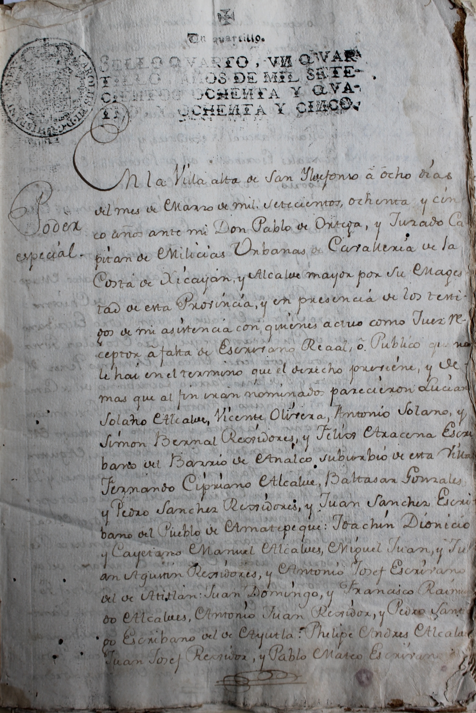

Prototype visualization for the Power of Attorney dataset, showing a special power of attorney granted by the indigenous populations of the Villa Alta region of Oaxaca to Señor Don Gaspar de Jovellanos to act on their behalf in response to the restructuring of Spain's national bank.
Nearly a hundred pueblos indios, represented by administrative councils, drafted and signed this document at the regional seat of Villa Alta.
Developed for the Humanities Data Visualization workshop at Georiga Tech University.